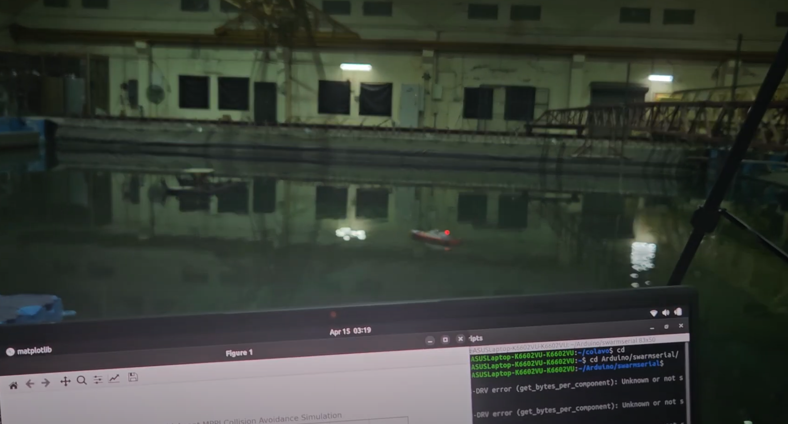

Multi-agent Collision Avoidance of ASVs using MPPI

Project Overview
This project implements a multi-agent control system for autonomous marine vehicles using Model Predictive Path Integral (MPPI) control. The system is designed to handle both real and simulated vessels in various scenarios including social navigation and goal-directed navigation while avoiding collisions with other vessels and static obstacles.
System Architecture
The system consists of several key components:
- MPPI Controller: The core control algorithm that generates optimal control actions
- Dynamics Models: Mathematical models that predict how vessels move in response to control inputs
- Objective Functions: Cost functions that define desired behaviors for different agent types
- Simulation Environment: A physics-based environment for testing control strategies
Key Components
MPPI Controller (MPPIPlanner)
The MPPIPlanner class implements a multi-agent Model Predictive Path Integral controller that handles multiple agents simultaneously. It coordinates the planning for all agents in the system.
Key features:
- Handles multiple heterogeneous agents
- Supports both agent-specific costs and configuration costs for inter-agent interactions
- Generates trajectories that consider the predicted behaviors of other agents
Dynamics Models
The project implements a learnable dynamics model for marine vehicles:
LearnableRoboatDynamics
This model represents an underactuated vessel with two control inputs (throttle and steering). The dynamics are governed by the following equations:
\[ M\dot{\nu} + D\nu = \tau \]
Where:
- $M$ is the inertia matrix
- $D$ is the damping matrix
- $\tau$ is the control input vector
- $\nu$ is the velocity vector in the body frame $[u, v, r]$
The specific equations used in the implementation are:
\begin{align} u_{dot} &= \frac{throttle \cdot thrust\_coef - d_{11} \cdot u}{m_{rb} - X_{du}} \\ v_{dot} &= \frac{-d_{22} \cdot v}{m_{rb} - Y_{dv}} \\ r_{dot} &= \frac{steering \cdot steer\_coef - d_{33} \cdot r}{I_{z\_rb} - N_{dr}} \end{align}
Where:
- $u, v, r$ are the surge, sway, and yaw velocities
- $d_{11}, d_{22}, d_{33}$ are the damping coefficients
- $m_{rb}, I_{z\_rb}$ are the rigid body mass and moment of inertia
- $X_{du}, Y_{dv}, N_{dr}$ are the added mass terms
- $thrust\_coef, steer\_coef$ are the control effectiveness parameters
Objective Functions
The project uses two main objective functions:
RoboatObjective
General cost function for autonomous surface vessels.
Components:
- Goal cost: Penalizes distance to the goal
\[ C_{goal} = \|positions - goals\|_2 \cdot w_{goal} \]
- Heading to goal cost: Encourages the vessel to face toward the goal
\[ C_{heading} = \theta_{error}^2 \cdot w_{heading} \]
where $\theta_{error}$ is the angle between the vessel's heading and the direction to the goal.
- Velocity cost: Penalizes inefficient motion
\begin{align} C_{vel} &= C_{back} + C_{lat} + C_{rot} + C_{max} \\ C_{back} &= \max(0, -v_{forward}) \cdot w_{back} \\ C_{lat} &= v_{lateral}^2 \cdot w_{lat} \\ C_{rot} &= r^2 \cdot w_{rot} \\ C_{max} &= \max(0, \|v\| - v_{max})^2 \cdot w_{max} \end{align}
- Static obstacle cost: Penalizes proximity to obstacles
\[ C_{obstacle} = \begin{cases} w_{obstacle} \cdot \exp\left(\frac{margin - d_{obstacle}}{margin}\right) & \text{if } d_{obstacle} < margin \\ 0 & \text{otherwise} \end{cases} \]
where $d_{obstacle}$ is the distance to the nearest obstacle.
SocialNavigationObjective
Cost function for multi-agent scenarios where vessels need to navigate while respecting social norms.
Components:
- Collision avoidance cost: Penalizes proximity to other agents
\[ C_{collision} = \begin{cases} w_{collision} \cdot \exp\left(\frac{margin - d_{agent}}{margin}\right) & \text{if } d_{agent} < margin \\ 0 & \text{otherwise} \end{cases} \]
where $d_{agent}$ is the distance to the nearest agent.
- Rule-based navigation cost: Implements maritime navigation rules
- Head-on rule: When two vessels approach head-on, both should alter course to starboard
- Crossing rule: When two vessels are crossing, the vessel that has the other on its starboard side should give way
- Stand-on rule: The vessel with right of way should maintain its course and speed
Implementation Details
MPPI Algorithm
The MPPI algorithm works as follows:
- Generate K random control sequences
- Simulate the system forward using the dynamics model for each sequence
- Compute the cost for each trajectory
- Weight the control sequences based on their costs
- Compute a weighted average to get the optimal control
The key equation for updating the control sequence is:
\[ u_t = \sum_{k=1}^{K} w^k u_t^k \]
Where:
- $u_t$ is the optimal control at time t
- $u_t^k$ is the k-th sampled control at time t
- $w^k$ is the weight for the k-th trajectory, computed as:
\[ w^k = \frac{\exp(-\frac{1}{\lambda}S(x_0, u^k))}{\sum_{j=1}^{K}\exp(-\frac{1}{\lambda}S(x_0, u^j))} \]
Where:
- $S(x_0, u^k)$ is the cost of the k-th trajectory
- $\lambda$ is a temperature parameter
Dynamics Integration
The dynamics are integrated using Euler integration:
\[ x_{t+1} = x_t + f(x_t, u_t) \cdot dt \]
Where:
- $x_t$ is the state at time t
- $u_t$ is the control input at time t
- $f(x_t, u_t)$ is the state derivative from the dynamics model
- $dt$ is the time step
Multi-Agent Coordination
For multi-agent scenarios, the system:
- Computes individual costs for each agent using RoboatObjective
- Computes interaction costs between agents using SocialNavigationObjective
- Combines these costs to generate coordinated control actions
Handling Zero Actions
A special case in the dynamics model is handling zero actions (when both throttle and steering are zero). In this case, the vessel should gradually come to a stop due to water resistance. This is implemented by:
- Detecting when actions are close to zero
- Applying exponential decay to velocities
- Setting velocities below a threshold to exactly zero
Multi-Agent Initialization
The system initializes agents in a polygon formation with diagonally opposite goals:
- Agents are placed equidistantly around a circle
- Each agent's goal is set to the diagonally opposite point on the circle
- Agents initially face toward the center of the circle
This configuration creates a challenging scenario where all agents must navigate through the center while avoiding collisions.

Key Features
- Handles multiple heterogeneous agents
- Supports both learned and analytical dynamics models
- Incorporates social navigation principles and maritime rules (COLREGS)
- Scalable to large numbers of vessels (tested with up to 20 vessels)
- Robust to sensor noise and prediction uncertainties
- Adaptive to dynamic environments and changing vessel behaviors
- Real-time performance suitable for embedded marine systems
- Provides visualization tools for debugging and analysis
Technical Specifications
- Platform: Various ASV types with different dynamics models
- Sensors: Simulated AIS, radar, and camera systems
- Computing: NVIDIA Jetson Xavier NX
- Software: ROS2, PyTorch, PyBullet
Project Gallery


Publications
-
Multi-agent Collision Avoidance for Autonomous Surface Vessels using Model Predictive Path Integral Control
A Vijayakumar, A Somayajula
Under Review
Future Work
- Improve computational efficiency for real-time performance
- Incorporate uncertainty in dynamics and observations
- Extend to more complex scenarios with obstacles and currents